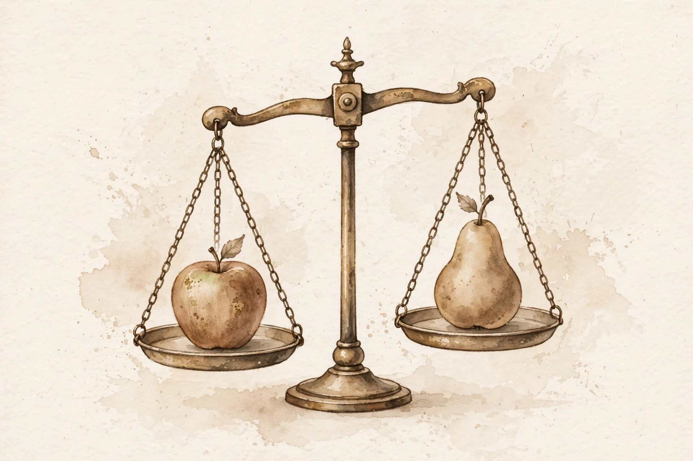

U09 · Aggregation, impossibility, and fairness
Three voters disagree. What does the group want? The answer depends on the rule, and no rule is perfect, and the voters can game every non-dictatorial one, and the Condorcet cycle proves majorities can contradict themselves. This unit builds the impossibility theorems, the strategic games, and the fair ways to cope.
Sourcing. No full transcript exists for sessions S16 and S17. This companion narrates content/v2/cs329h/lessons/u09_lesson.md. All twelve concepts are taught as independent theory: the lesson marks the sessions PLANNED and every concept PLANNED / SOURCE ATTRIBUTION PENDING.
How to read the tags. Every number carries its lesson section. Anything the companion computes is tagged Illustration. A Interpretation tag marks the companion's own reading of the lesson. Where the lesson leaves a value out, the page says so in words.
From the lesson A fact, number, or mechanism from the lesson.
Illustration Invented by the companion: an analogy, a toy with made-up values, or a what-if. Never lecture content.
Interpretation The companion's reading of why a lesson fact matters. The fact is the lesson's, the gloss is ours.
C01 · Contract 6 Points to the exact lesson section behind a claim or number.
Section 1 · C01, C02, C04
From the lessonC01 · Contract 3, 5, 6
Individual rankings are inputs. The social ranking is the output of a rule, and the rule is a choice. The lesson toy: three voters, ballots A>B>C, B>C>A, C>A>B. Plurality tallies 1-1-1, a tie. Borda tallies 3-3-3, a tie. Condorcet: no winner. Three rules, no agreement. What the group wants is undefined without the rule. Lesson figure u09_f01 draws the three rule boxes.
From the lessonC02 · Contract 3, 5, 6
Arrow: with 3 or more candidates, no ranked voting rule satisfies all four of unrestricted domain, Pareto, independence of irrelevant alternatives, and non-dictatorship. Something must give. The lesson's spoiler makes IIA concrete. Without D, plurality elects A at 4-3-2. D enters, loses pairwise to B 2-7, yet plurality flips to B at A2 D2 B3 C2. Adding a loser changed the winner: IIA violated. The proof intuition: IIA plus Pareto force a swing voter who becomes decisive on all pairs, a dictator. Lesson figure u09_f03 tabulates the axioms.
From the lessonC04 · Contract 3, 5, 6
The Condorcet cycle: A beats B 2-1, B beats C 2-1, C beats A 2-1. Margins +1, +1, +1. No Condorcet winner exists. Majority rule contradicts itself from sincere ballots, no trickery. Adding two A>B>C ballots breaks it: margins +3, +3, +1, transitive A>B>C. The lesson simulates cycle frequency under impartial culture: 0.081 for 11 voters, seed 0. And the agenda decides: vote A-vs-B first, then the winner vs C, and C wins the tournament though no Condorcet winner exists. The procedure, not the voters, picks. Lesson figure u09_f02 draws the triangle.
Three rules, no agreement: plurality 1-1-1, Borda 3-3-3, Condorcet none. The group want is undefined without the rule.
The spoiler: D enters, loses to B 2-7, and flips the plurality winner from A to B. Adding a loser changed the winner.
Section 2 · C03, C05, C10
From the lessonC03 · Contract 3, 5, 6
Gibbard-Satterthwaite: with 3 or more outcomes, every non-dictatorial deterministic rule is manipulable. Some voter can profit by lying. The lesson's found example, by exhaustive search: Borda, sincere profile (A>B>C, B>A>C, B>A>C). Sincere totals: A4 B5 C0, B wins on the tie-break. Voter 0, whose true order is A>B>C, misreports A>C>B. New totals: A4 B4 C1, the tie-break elects A. Voter 0 gains: A over B. The lie pays. Lesson figure u09_f04 draws both tallies.
From the lessonC05 · Contract 3, 5, 6
Strategic voting is a game. The lesson's 2-player version: voter 0 against voter 1, sincere or strategic each. Payoffs are the rank of the outcome in the voter's true order. (Sincere, sincere) gives B, payoffs (1, 0). Any profile with voter 0 strategic gives A, payoffs (0, 1). Voter 0 has a strictly dominant strategic move. Equilibria can differ wildly from sincere outcomes. Lesson figure u09_f05 draws the matrix.
From the lessonC10 · Contract 3, 5, 6
The theorems scope ranked, deterministic, unrestricted-domain rules. They do not rule out the escapes: 2 candidates where majority works, single-peaked domains where the median voter's top is the Condorcet winner, cardinal ballots like range voting, or randomized rules like random dictator. The lesson's single-peaked worked example: ideals 0.2, 0.4, 0.8 over candidates at 0, 0.5, 1.0. Margins: B>A +1, B>C +1, A>C +1. The median peak, B, beats all pairwise. The honest use of impossibility is to pick your poison deliberately.
The profitable lie: sincere A4 B5 C0 elects B. Misreported A4 B4 C1 elects A. The lie pays.
The theorems have escapes: 2 candidates, single-peaked domains, cardinal ballots, randomization. Pick your poison deliberately.
Section 3 · C06, C07, C08
From the lessonC06 · Contract 3, 5, 6
Cardinal aggregation compares numbers across people, but utility scales are personal. The lesson toy: voter 1 scores A=100, B=0. Voter 2 scores A=0, B=1. Raw sums: A=100, B=1, A wins by a mile. Normalize voter 1 to [0,1]: A=1, B=1, a tie. A meaning-preserving rescale flipped the verdict from landslide to tie. Individual orders never changed. The sum is meaningless without comparable scales. Lesson figure u09_f06 draws both scalings.
From the lessonC07 · Contract 3, 5, 6
The Condorcet jury theorem is the optimistic case: voters share the goal of the truth and get noisy signals. With n odd voters, each correct with probability p > 0.5, independently, the majority's accuracy climbs toward certainty. The lesson's binomial numbers: n = 5, p = 0.6 gives 0.6826. n = 101 gives 0.9791. The fragile assumption is independence. Correlated errors void it: voters who all watch the same misleading news are confidently wrong together.
Illustration The jury toy. Move competence and crowd size. The browser sums the exact binomial for the majority's accuracy.
0.60
101
Majority accuracy appears here.
From the lessonC07 · Contract 6 The lesson reports 0.6826 at n = 5 and 0.9791 at n = 101. The toy must reproduce both.
From the lessonC08 · Contract 3, 5, 6
Report accuracy per group, not just pooled. The lesson toy: two groups of 500, accuracies 0.87 and 0.59, pooled 0.73. The pooled number looks fine. Group B at 0.59 is near chance. The pooled 0.73 is the size-weighted mean, and it hides a failing minority. The fix is data or modeling per group, not more pooled data. Lesson figure u09_f07 draws the three bars.
The rescale flips the landslide to a tie: 100 to 1 becomes 1 to 1. The sum is meaningless without comparable scales.
The jury: 0.6826 at n = 5, 0.9791 at n = 101. Independence is the load-bearing wall.
Pooled 0.73 hides group B at 0.59. The average is fine. The minority is near chance.
Section 4 · C09, C11, C12
From the lessonC09 · Contract 3, 5
Every aggregation bakes in values: whose ballots count, how they are weighted, what the rule maximizes. These are normative choices. They cannot be derived from the ballots. The lesson's design memo names the four elements: franchise, ballot form, rule, tie-breaks, each with a named decider and a reason. Arrow says no rule is neutral, GS says no rule is strategyproof, C06 says sums need scales. The designer must own the tradeoffs explicitly instead of hiding behind the data.
From the lessonC11 · Contract 3, 5
Practical relaxation turns impossibility into engineering: pick a rule, document the violated axiom, add guardrails. The lesson's template: Borda drops IIA, the guardrail watches for spoiler-like flips between elections, the review revisits the rule yearly. On the cycle profile, Borda with the guardrail flags the 3-3-3 near-tie for human review instead of silently tie-breaking. Impossibility constrains the choice. It does not forbid shipping.
From the lessonC12 · Contract 3, 5, 6
The Pareto frontier is the set of policies where no group can gain without another losing. The lesson toy: policy t in [0,1], w_A = sqrt(t), w_B = sqrt(1-t). At t = 0.25: (0.500, 0.866). At t = 0.5: (0.707, 0.707). At t = 0.75: (0.866, 0.500). Max-sum and max-min both pick t = 0.5 here. Every point on the frontier is efficient. Choosing among them is values, not math. Lesson figure u09_f08 draws the concave curve.

The frontier: (0.500, 0.866), (0.707, 0.707), (0.866, 0.500). Every point is efficient. Choosing among them is values, not math.
Wisdom index